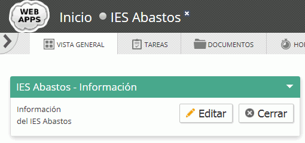

Cree con phpMyAdmin un usuario de MySQL con nombre iaw_fengoffice_1, contraseña iaw_fengoffice_1 y base de datos iaw_fengoffice_1.
Abra la página /fengoffice.
Rellene la información necesario para instalar Feng Office. Por ejemplo:
General:
plugins: Core_dimensions, Workspaces
Datos del usuario administrador:
nombre: admin
dirección de correo: admin@example.com
contraseña: admin
empresa: WebApps
Entre como administrador y haga una captura del sitio:
2. Personalizar
Cambie el idioma a Español (haga una captura):
Cambie el logotipo (haga una captura):
Asigne una imagen al administrador (haga una captura):
3. Usuarios y áreas de trabajo
Cree el siguiente usuario de tipo Gerente (que la contraseña coincida con su nombre de usuario) (haga una captura):
Compruebe que puede entrar como usuario jefeatención (haga una captura)
Cree el siguiente usuario de tipo Ejecutivo (que la contraseña coincida con su nombre de usuario) (haga una captura):
Compruebe que puede entrar como usuario técnicoatención (haga una captura)
4. Tareas
Como usuario jefeatención, abra una tarea y asígnesela al usuario técnicoatención (haga una captura):
Como usuario técnicoatención, comente la tarea y complete la tarea después de hacer el ejercicio siguiente (haga una captura):
5. Notas
Habilite la creación de notas (haga una captura).
Como usuario técnicoatención, cree una Nota relacionada con la incidencia anterior (haga una captura):
6. Informe
Cree un área de trabajo (haga una captura):

Cree dos documentos en el área de trabajo (haga capturas):
Un documento html en el que ponga que el aula 112 es el aula de 2º de ASIR.
Un documento que enlace a la página web del IES Abastos http://www.iesabastos.org/
Cree un informe en el que se listen los documentos disponibles en el espacio de trabajo IES Abastos (haga una captura) y descargue el informe en formato PDF
7. Temas
Cree un nuevo tema llamado webapps a partir del tema predeterminado (haga una captura).
Modifique el tema webapps cambiando los colores en la pantalla de Vista general (haga una captura):
Modifique el tema webapps cambiando el logo y los colores en la pantalla de Login (haga una captura):
Escriba en el documento explicaciones.txt cómo ha creado el tema, como ha cambiado el logo y las reglas añadidas a las hojas de estilo.
8. Alias
Configure el servidor de manera que se pueda acceder a fengoffice escribiendo la dirección http://localhost/fengoffice/
Copie en el documento explicaciones.txt las líneas añadidas al archivo de configuración.
9. Copias de seguridad
Realice una copia de seguridad manual completa de la instalación (ficheros y datos).